Inverno
- Giugno
- Luglio
- Agosto

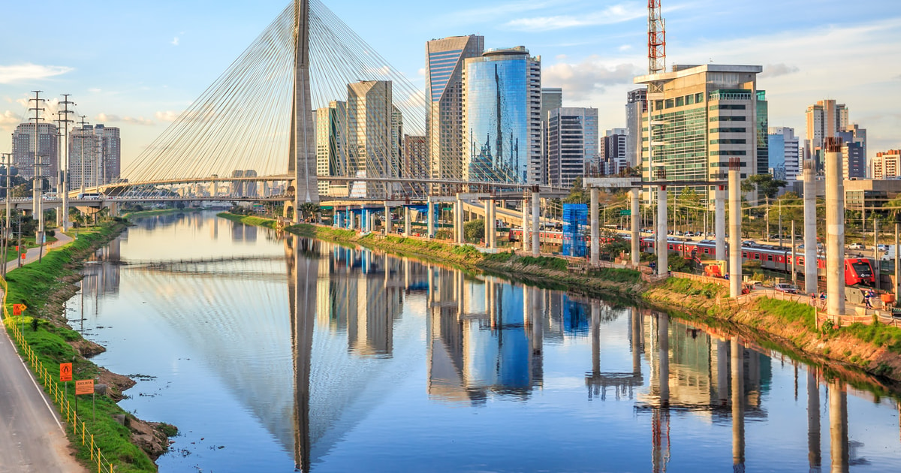
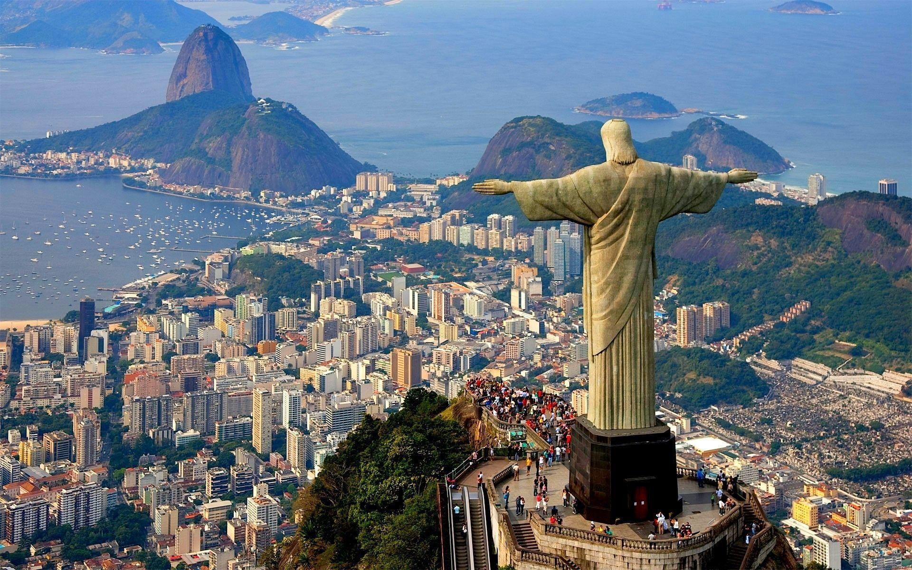
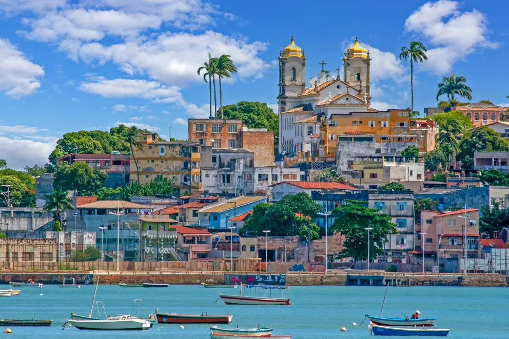
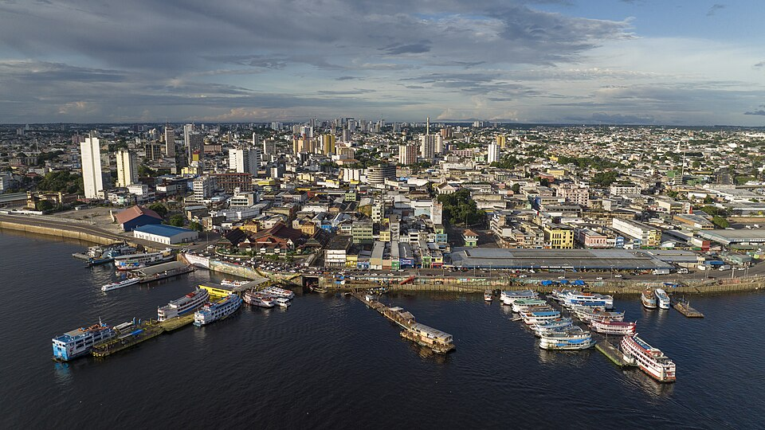
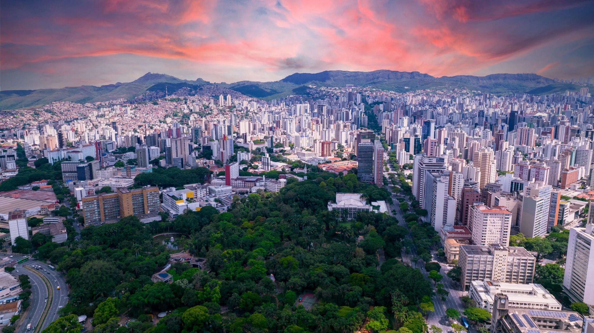
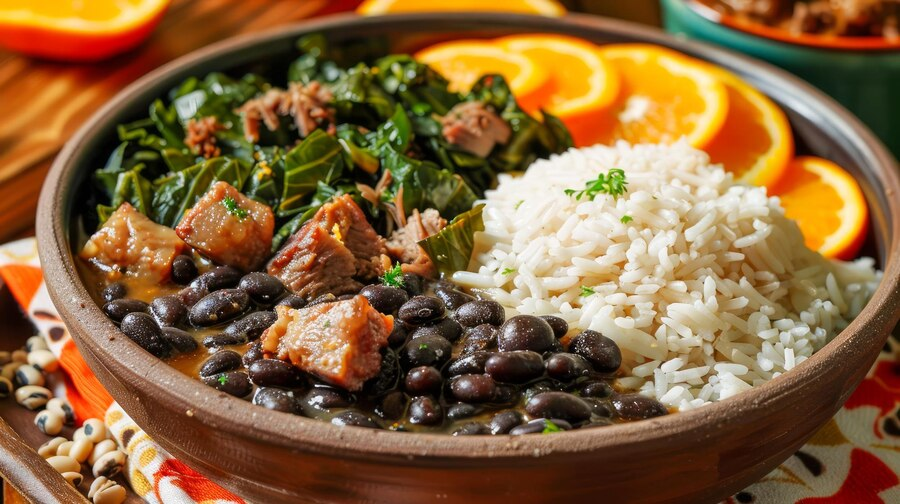
Stufato di fagioli neri e carni, servito spesso con riso, farofa e arancia.
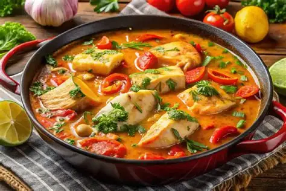
Stufato di pesce o frutti di mare con pomodoro, cipolla e peperoni; le versioni regionali usano ingredienti e condimenti diversi.
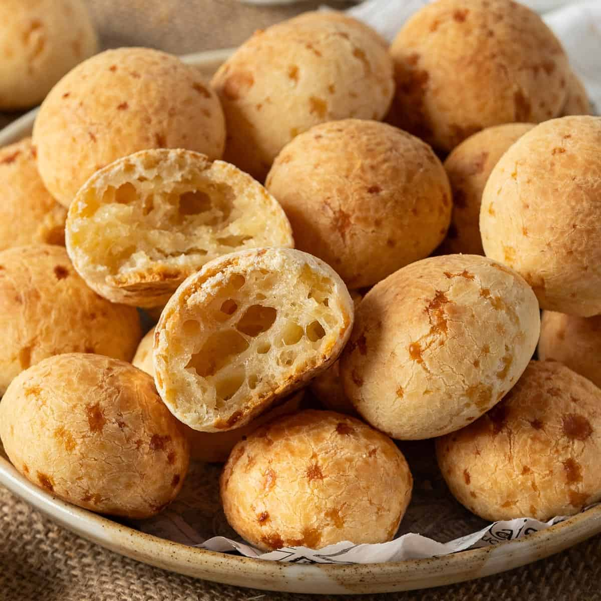
Panini al formaggio dalla crosta dorata e dal cuore morbido, preparati con farina di tapioca.
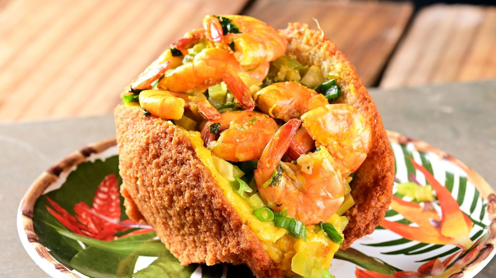
Frittella di fagioli dall'occhio nero fritta nell'olio di palma e tradizionalmente farcita con vatapá e gamberi.
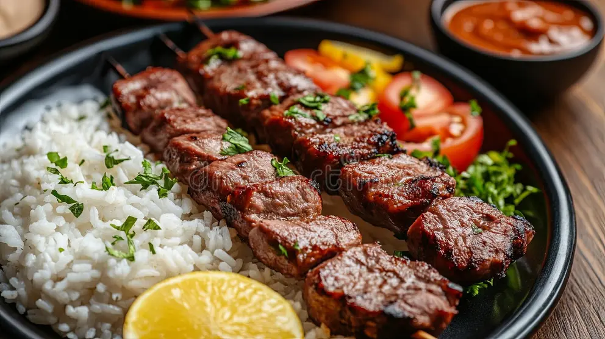
Carne cotta alla brace, spesso servita allo spiedo e condivisa durante i tradizionali churrascos.
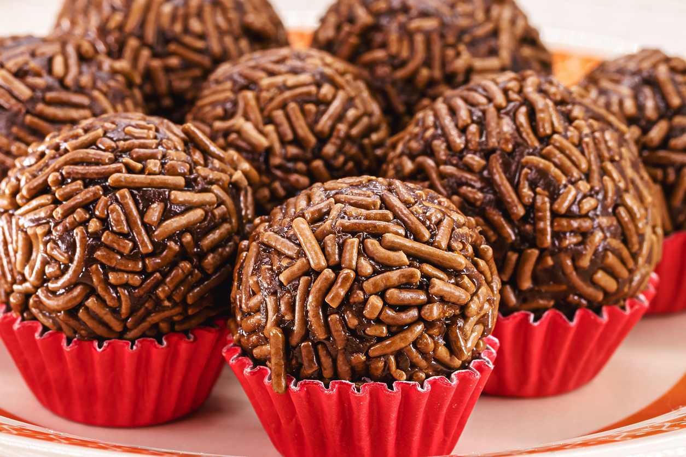
Dolcetto morbido al cacao e latte condensato, arrotolato in granella di cioccolato.